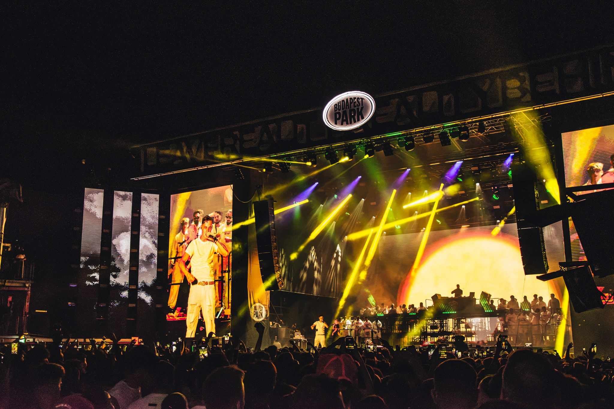

A zene a hangok és a csend érzelmeket kiváltó elrendezése, létezésének lényege az idő. A zene egy művészi kifejezési forma, a hangok és „nem-hangok” (csendek) időbeni váltakozásának többnyire tudatosan előállított sorrendje, mely nem utasít konkrét cselekvésre, viszont érzelmeket, indulatokat kelt és gondolatokat ébreszt.
